Curso de Google Documentos › Insertar › Lección 28
Lección 28 de 53 · menú Insertar
Cómo hacer un índice automático en Google Docs
Fecha del video: · Programado
¿Querés un índice automático en Google Docs? Con Insertar → Elementos de página → Índice, Google Docs arma el índice solo con los títulos de tu documento, y con un clic lo actualizás. Acá lo vemos paso a paso.
En el ejemplo usamos el documento «Lista de compras», con tres títulos: «peras para la tarta», «Jugo de peras» y «Dos kilos de peras». Al final borramos el índice y el documento quedó como estaba.
Paso 1: poné tus títulos con un estilo de encabezado
El índice se arma con los párrafos que tienen estilo de título o encabezado. Seleccioná el texto, abrí el desplegable de estilos (donde dice «Texto normal») y elegí Encabezado 1 → Aplicar Encabezado 1 (atajo Ctrl+Alt+1). También está en Formato → Estilos de párrafo.
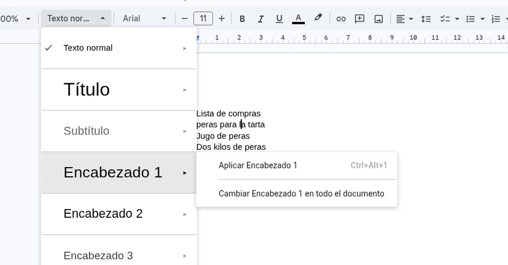
Los títulos aparecen en el panel de la izquierda, debajo de la pestaña del documento.
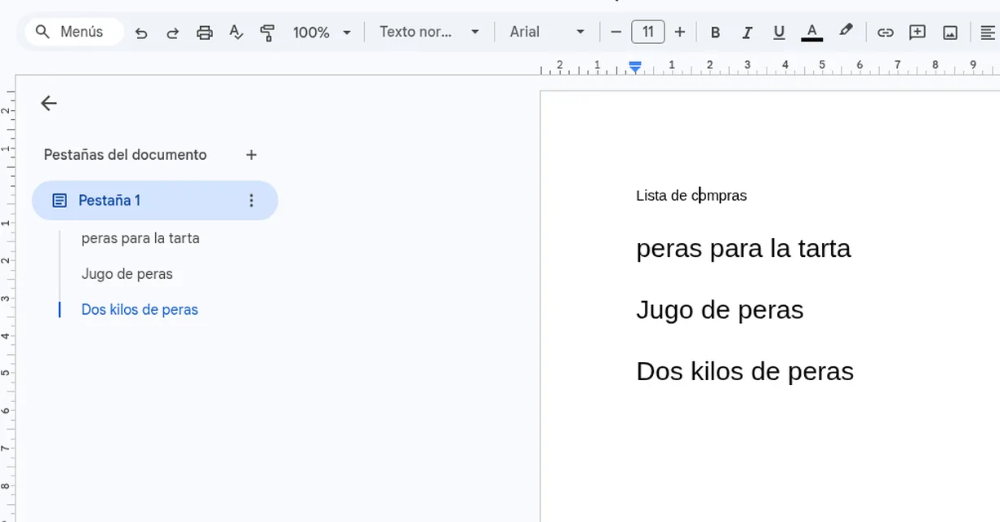
Paso 2: Insertar → Elementos de página → Índice
Hacé clic donde querés el índice (en el ejemplo, debajo de «Lista de compras»). Arriba, en la barra de menús, tocá Insertar, pasá por Elementos de página y después por Índice.
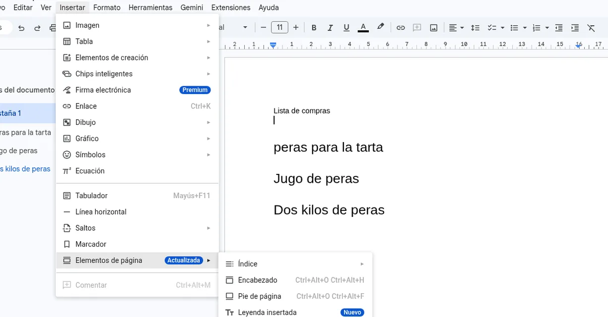
Paso 3: elegí uno de los 3 formatos
El submenú muestra 3 formatos como íconos. El primero es Texto sin formato; el segundo pone cada título con su número de página; el tercero usa enlaces azules.
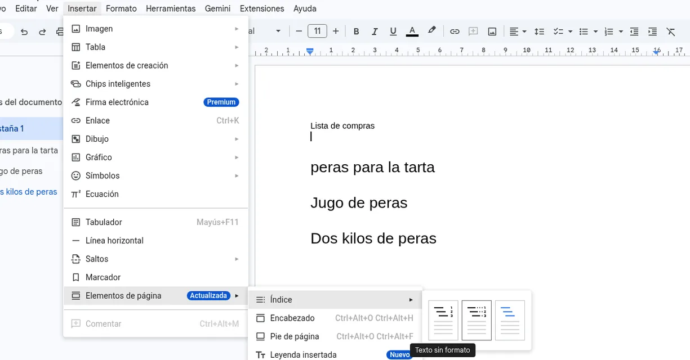
Con números de página, cada título aparece con una línea de puntos y el número de la página donde está.
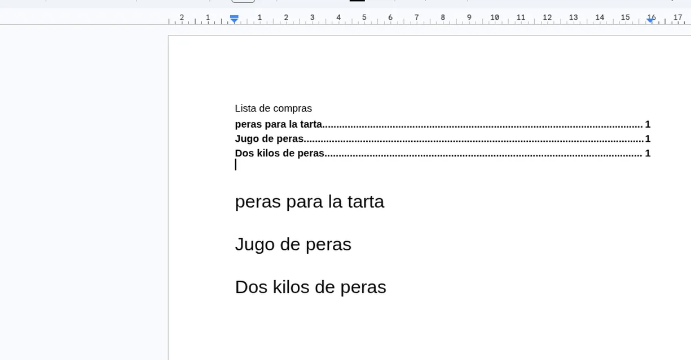
Con enlaces azules, cada línea del índice está vinculada a su título: al hacer clic, te lleva a esa parte del documento.
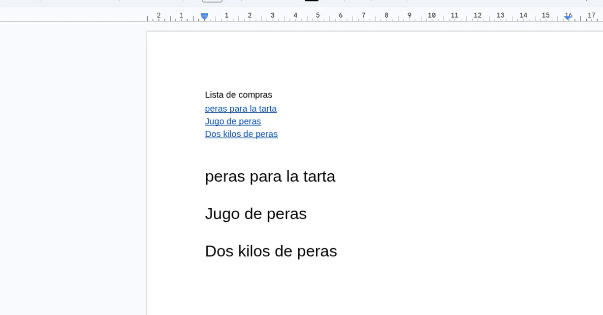
Paso 4: actualizar el índice
El índice no cambia solo cuando editás los títulos. A la izquierda del índice aparece una flecha circular: tocala para Actualizar índice.
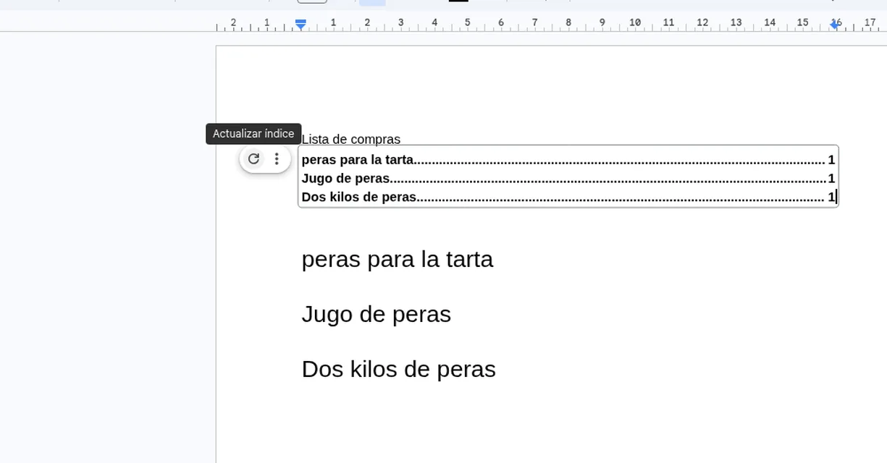
En el ejemplo pasamos «Dos kilos de peras» a «Texto normal» y, al actualizar, el índice quedó con 2 líneas.
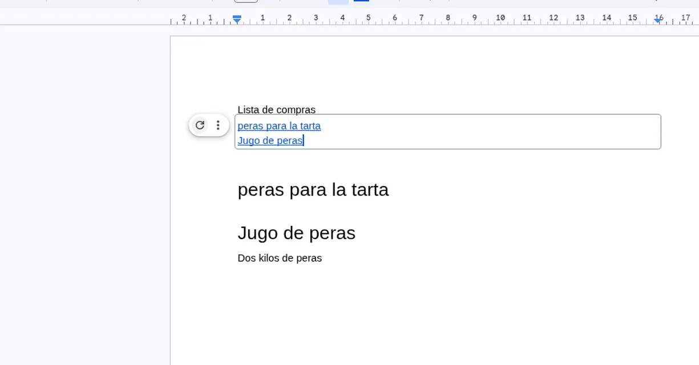
Paso 5: el panel de opciones del índice
Con los tres puntos (⋮) a la izquierda del índice se abre el panel Índice a la derecha: ahí cambiás el Formato, tildás o destildás Mostrar números de página y Mostrar carácter de relleno de pestaña, y elegís los Niveles de encabezado que se muestran y su sangría.
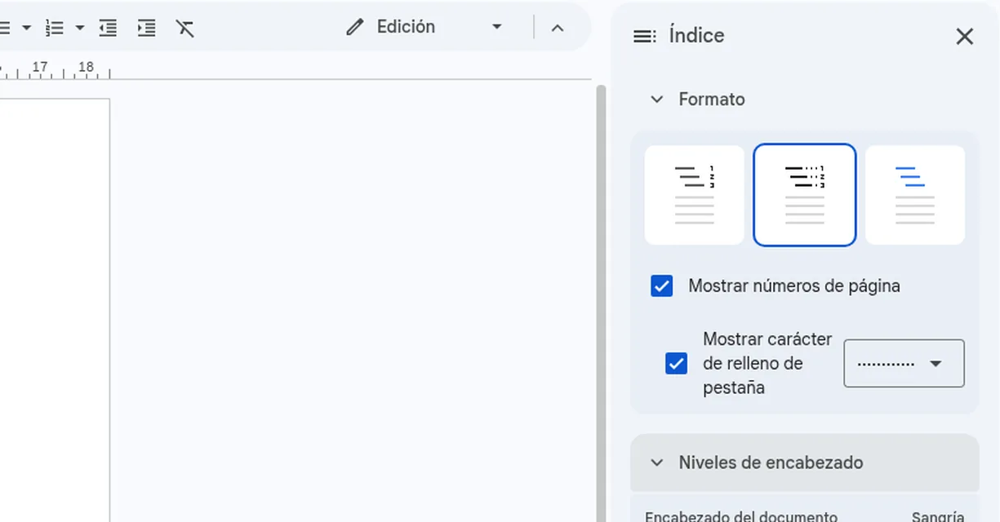
Paso 6: eliminar el índice
Con clic derecho sobre el índice tenés Opciones del índice, Actualizar índice y Eliminar índice (la ayuda de Google lo llama «Borrar índice», pero en pantalla dice «Eliminar índice»).
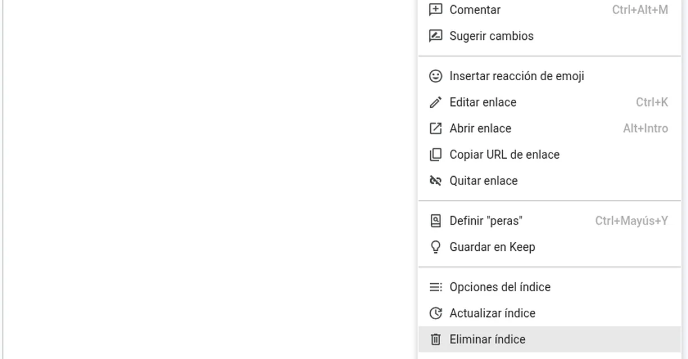
Ojo: si el documento tiene formato Sin páginas, no se puede cambiar el formato del índice. Para eso, el documento tiene que estar en formato Páginas (Archivo → Configuración de página → Páginas).
Al final eliminamos el índice y devolvimos los títulos a texto normal: el documento quedó como al principio.
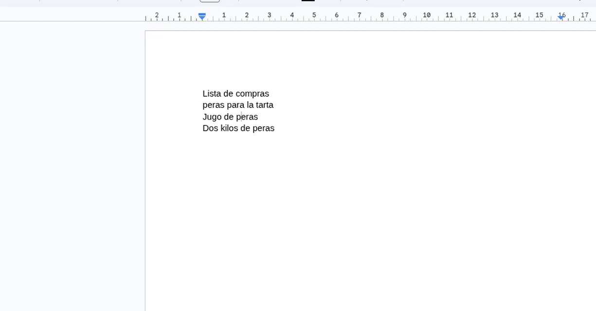
Fuente oficial: Cómo agregar un título, un encabezado o un índice en un documento. Mirá también el menú Insertar completo (video: Google Docs: menú Insertar paso a paso) y la lección anterior, Saltos de página y de sección.
Mirá el Short
Estreno del Short: 05/12/2026 · 17:00 (hora Argentina)
Video relacionado: Google Docs: menú Insertar paso a paso (tutorial completo) — el video largo del menú Insertar (verlo en YouTube).
Fuente oficial: Ayuda de Editores de Documentos de Google. Capturas propias en un documento de ejemplo («Lista de compras»). El video usa voz generada con IA.